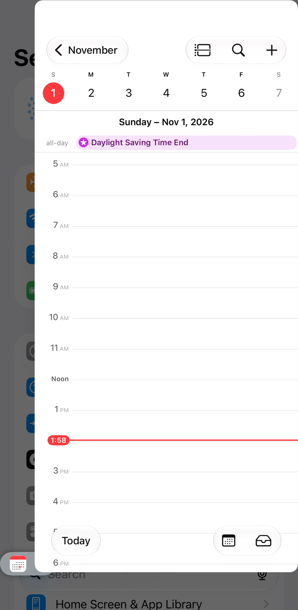
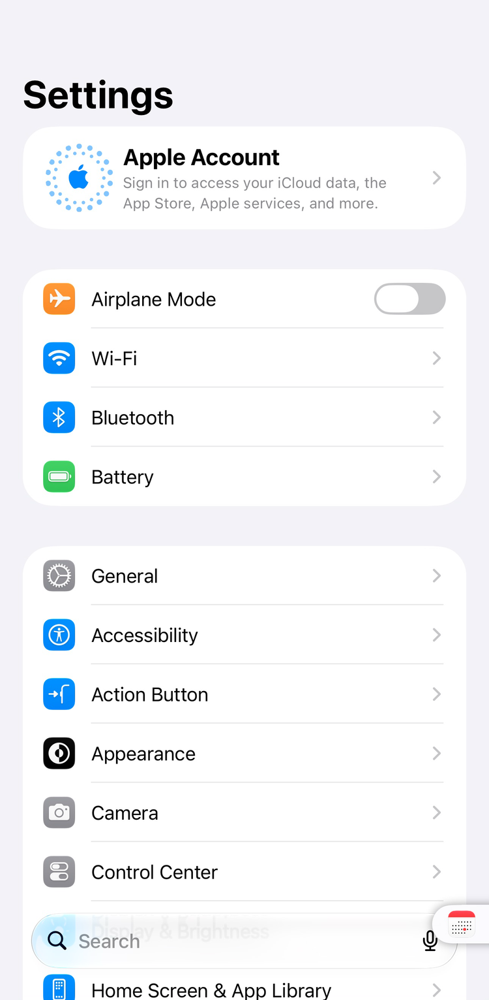

← All tweaks

PullOver Pro (Rootless)
iOS 15–27
Pin any app to a small handle on the side of the screen and pull it over whatever you're doing. The app runs live, and you never leave the one you're in. c1d3r's PullOver Pro, brought back.
- Tap or pull the handle to slide the pinned app in. Push it back to tuck it away.
- QuickSwitch: long-press the handle to pick another app from your recent apps or favorites. Drag an app to the middle to open it full screen.
- Settings for left-handed mode, a dark handle, QuickSwitch size, hiding in landscape, staying above the keyboard, closing when you go home, and shrinking the handle when it sits idle. Changes apply right away.
- Version
- 3.0.0~beta1
- Jailbreak
- Rootless, RootHide
Get it from the pwnapple repo: add it to your package manager, then search for PullOver Pro (Rootless).
9:41
9:41
9:41 9:41
9:41 9:41
9:41
What's New in 3.0.0 Beta 1
- First Rootless and RootHide release, rebuilt for iOS 15 to 27. Apps that aren't running start in the background when you pull them over, and favorites are picked with AltList.
- The original's paid unlock is gone. It's free, and the source is public under the GPL, like the original.
Works on
- iOS 15 to 27. Rootless and RootHide jailbreaks.
- Tested on an iPhone XR (iOS 16.0.3), an iPhone 11 Pro Max (iOS 16.2) and iOS 27 (virtual iPhone, RootHide).
- If it ever sends your phone to Safe Mode, open Sileo (it still works there) and uninstall it. Then tell me.
Good to know
- An app that's already open full screen can't be pulled over at the same time.
- Needs AltList. Sileo installs it for you. On iOS 27, open its settings from the TweakSettings app.
Credits
PullOver Pro by c1d3r (@c1d3rdev), released under the GPL-3.0 (source). iOS 13 support by @akusio_RR. iOS 15 to 27 Rootless and RootHide support by Jond-ie (@Jond_ie).